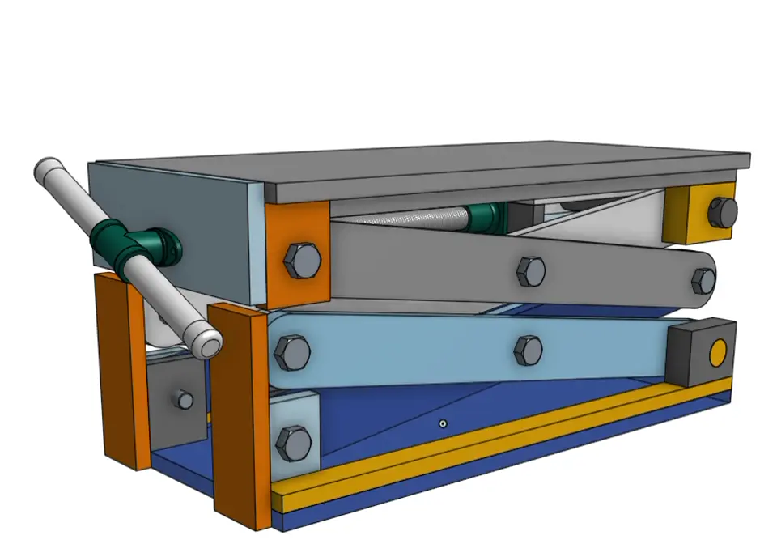
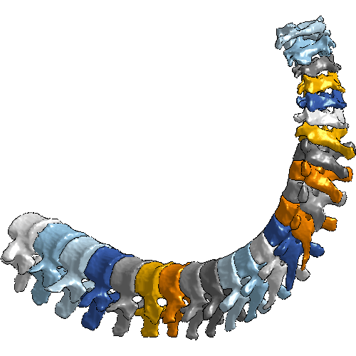

If you've never used CAD before, give Onshape a try -- it's free for personal use!
Computer-Aided Design (CAD)
I was first introduced to CAD through some early 2-D version of AutoCAD on a DEC workstation in the mid 80s, but my first "real" use of CAD was during grad school with SolidWorks and PTC Creo Parametric. I then taught CAD for Boston University Department of mechanical engineering for six years, and then use both Creo Parametric as well as Onshape during my time at PTC to create models and support of academic customer projects. The PTC Education team adopted the CAD Drawings course structure, topics and many of the examples I created while teaching CAD at BU for the CAD Drawings curriculum in the Onshape Learning Center.
 In my own time, I largely leverage CAD to support my own woodworking and construction projects, and share models with friends and consulting clients to help them visualize an ideate their own home renovations. I created a document to support the design of a scissor lift to raise and lower a very heavy drum sander I use in my woodshop. This CAD document contains an overview of the project as well as the first principles calculations of the forces and other details.
 While I have used lots of different platforms, Onshape stands out from the others because of its cloud connectivity. It enables users to interact with models in the way that is impossible with desktop-based CAD. For example, in this Colab Python document, I imported a model of a spine, created Revolute mates between the vertabrae, and used Python to animate the mates to show how the spine might bend and move.
It's so much faster to explore the possibilities of creation and integration digitally versus physical, even at a prototype level. That's the beauty of CAD and especially CAD that can interact with the physical world.